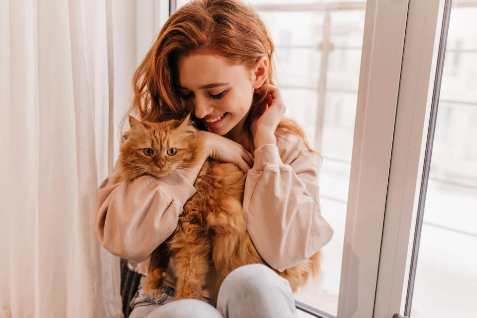
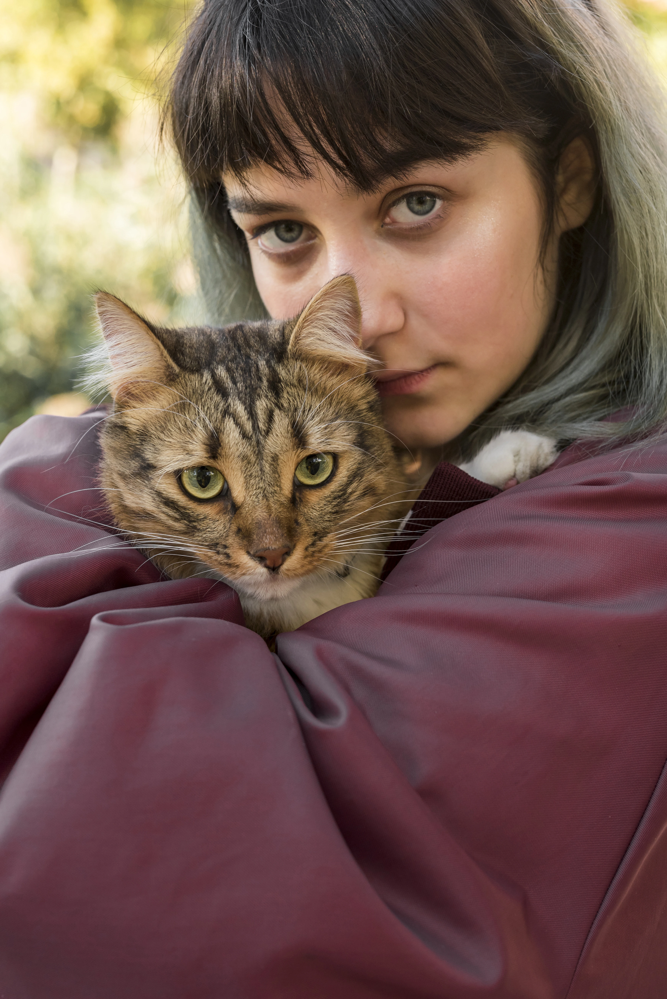
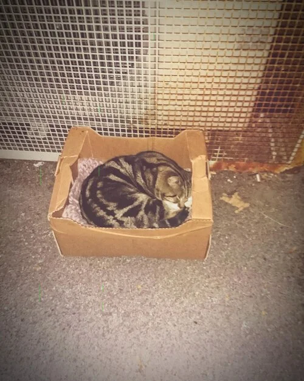

🐾 Quiénes somos
Detrás de Patitas Felices hay una red de personas que aman a los animales y sueñan con un mundo mejor para cada michi. Esta tienda nació del deseo de generar recursos para seguir ayudando.
✨ Nuestro equipo
Amor, compromiso y muchas caricias felinas 🐾

Maga
“Transformar el amor en acciones concretas. Esa es mi misión.”
Luz
“Cada rescate deja huellas en el alma.”

Valen
“Creer, rescatar, sanar. Una y otra vez.”
“Un solo gesto de amor puede cambiarle la vida a un michi. Gracias por ser parte.”
🌱 Cómo comenzamos
Todo surgió entre charlas, rescates y muchas ganas de hacer la diferencia. Así nació Patitas Felices: para combinar ternura con acción.
